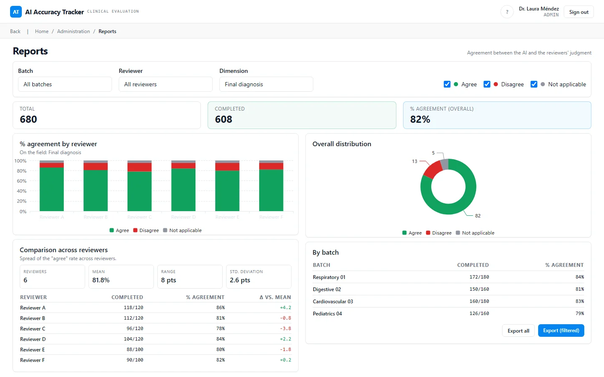
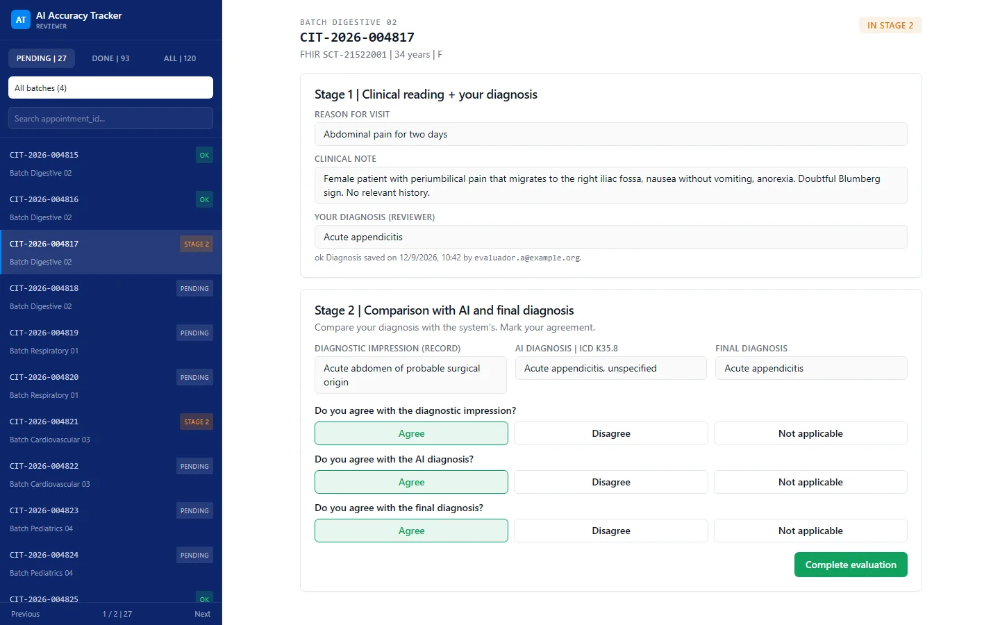
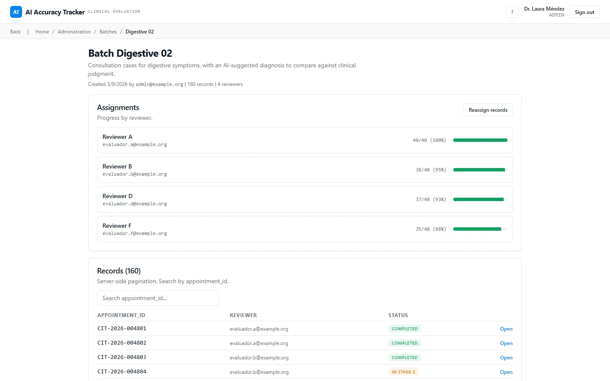

Clinical AI accuracy tracker
Web application that measures, case by case and under medical review, how often an AI diagnostic suggestion holds up.
- 75 to 90%agreement, AI and evaluators
- 5,000 to 50,000cases evaluated
- 6 to 20medical evaluators
In use for evaluation rounds. Figures as reported in 2026. See the screens
Problem
A national public telemedicine service uses an AI model that suggests diagnoses from the clinical note of a teleconsultation. To trust that suggestion, or to improve it, the service needs an evidence base: for thousands of real cases, what did a physician conclude on their own, and did that physician agree with the AI's suggestion and with the final recorded diagnosis?
That evidence needs traceability. Each judgment must be attributable to an evaluator, the physician's own diagnosis must not be biased by seeing the AI answer first, and the results must be countable by evaluator, batch and level of agreement. A spreadsheet handed around between reviewers cannot guarantee any of that.
Solution
A role-based web application with a two-stage evaluation flow:
- An administrator imports a batch of cases from CSV (the importer maps columns flexibly, so files from different sources load without manual reformatting) and distributes them evenly across evaluators, with manual adjustment.
- Stage one: the evaluating physician sees the clinical data and writes their own diagnosis. Saving locks it.
- Stage two: the AI suggestion, the reference assessment and the final diagnosis are revealed, and the physician records agree, disagree or not applicable on each. Saving finalizes the case.
- Administrators can review and correct any case (edits are stamped with who and when). Reports break results down by evaluator, batch and level of agreement, with CSV export.
Business rules (record state machine, permissions, batch distribution, CSV mapping, report metrics) live in a pure domain layer covered by unit tests. The design is prepared to scale to very large batches: chunked imports, aggregated queries and streamed exports.
Impact
Figures are ranges, as of August 2026:
- Reported agreement between the AI suggestion and medical evaluators: 75 to 90 percent.
- Cases evaluated: 5,000 to 50,000.
- Medical evaluators: 6 to 20.
The value is a defensible number: every percentage traces back to individual physician judgments recorded in a fixed order.
My role
- Gathered the requirement and the domain from the requesting area and turned it into a written specification.
- Designed the screens and the evaluation flow.
- Developed the application with AI assistance, following a written plan and decision records.
- Prepared the delivery: containers, configuration, deployment runbook and documentation.
Stack
- Next.js 15.5.19 (App Router, Server Actions), React 19.2.7, TypeScript.
- PostgreSQL 16 (container image
postgres:16-alpine), Prisma 6.19.3. - Auth.js (next-auth) 5.0.0-beta.25 with credentials; passwords hashed with bcrypt.
- Zod, React Hook Form, TanStack Query and Table, Recharts, shadcn/ui with Tailwind CSS.
- Vitest 2.1.9 for unit tests, Playwright 1.60.0 for end-to-end, ESLint, Prettier, Husky and commitlint.
- Node 22, pnpm 9.12.0, Docker; deployment target documented as Cloud Run with a serverless PostgreSQL.
Human in the loop in this project
Evidence paths below refer to private repositories and are shown as plain text.
- The product itself is a human-in-the-loop design: the physician commits their own diagnosis before the AI answer is revealed (
HANDOFF.md, evaluation flow). - Decisions recorded with reasons and discarded alternatives:
docs/adr/0001-stack-y-arquitectura.md,docs/adr/0002-estrategia-datos-a-escala.md. - Business rules isolated and tested:
src/domain/registro/estado.tswithestado.test.ts,src/domain/permisos.tswithpermisos.test.ts,src/domain/asignacion/distribuir.test.ts. - Gate before merge:
.husky/pre-commit,commitlint.config.cjs,.github/workflows/ci.yml. - Handoff and runbook:
HANDOFF.md,DEPLOY.md,docs/replicar-despliegue-cloud-run.md.
Status
In use for evaluation rounds. The repository documents a deployment path (container image, CI/CD workflows, runbook); the exact production state is not published.
Screens



Information in these screens has been anonymized.